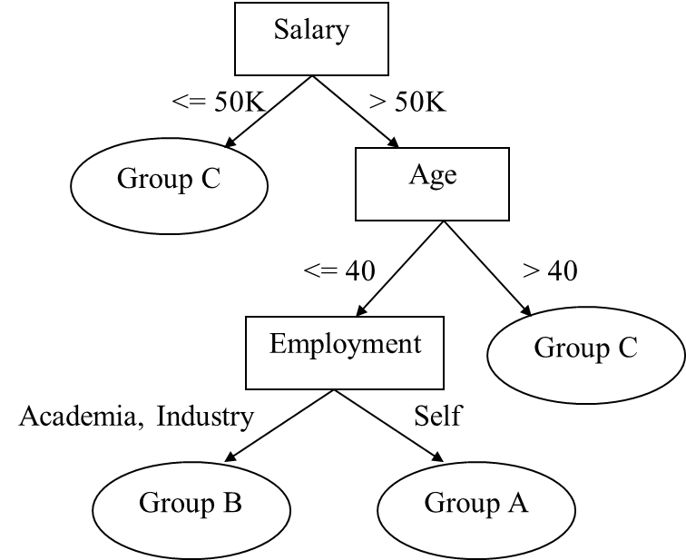
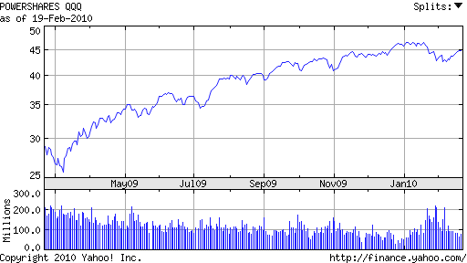

Shankar Jagadeesan
Teaching machines to see and respond

Prediction of QQQQ using Random tree classification
There's a lot of machine learning algorithms present today. Each has it's own pros and cons. In this project I was asked to use an efficient ensemble method called Random classification trees.Ensemble methods are learning algorithms that construct a set of classifiers and then classify new data points by taking a (weighted) vote of their predictions. A few examples are Bagging, Boosting, Random forests,etc. One of the big advantages of classification trees is they are easy to understand, can handle missing data and non-parametric
|  |
| A sample classification tree |
{kind=link}
Project description
QQQQ is the power shares value provided by the NASDAQ on daily basis. This is a public data available in various sites. We obtain the data from yahoo finance and the data obtained is for a year. The data obtained can be classified as a time series data set since the values of qqqq are plotted against time. I define 3 features across the obtained data with 1 categorical variable. The features are starting value, closing value and volume of the shares. The categorical variable has value of -1,1 or 0 based on daily return. A random decision tree is built with the above mentioned data. The random decision tree is derived from the concept of random forests developed by Adele Cutler and Leo brieman. The value qqqq is predicted for the future (next day) using the decision tree. Project was implemented using R, C and Python.
|  |
| Poweshares value graph plotted against time |
{kind=link}
Algorithm
1.) Given a tree with interior models labelled with cuts (variable(x) << threshold)(c) and set of interior records, this naturally labels leaves with category y (some class) and say labelling done with majority votes. 2.) To produce a classification tree fix a depth for the binary tree. For each interior node choose an independent variable x and cut c randomly. We go for maximum depth of the tree.